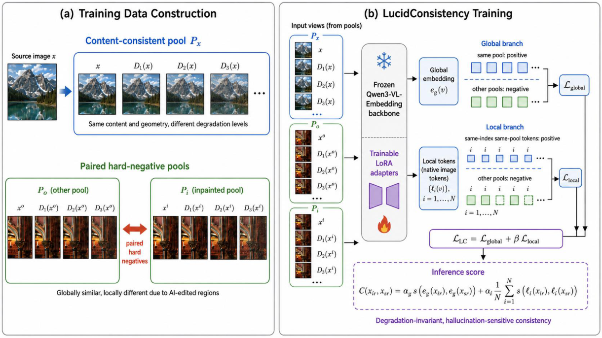
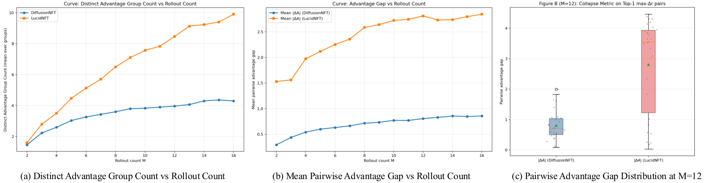
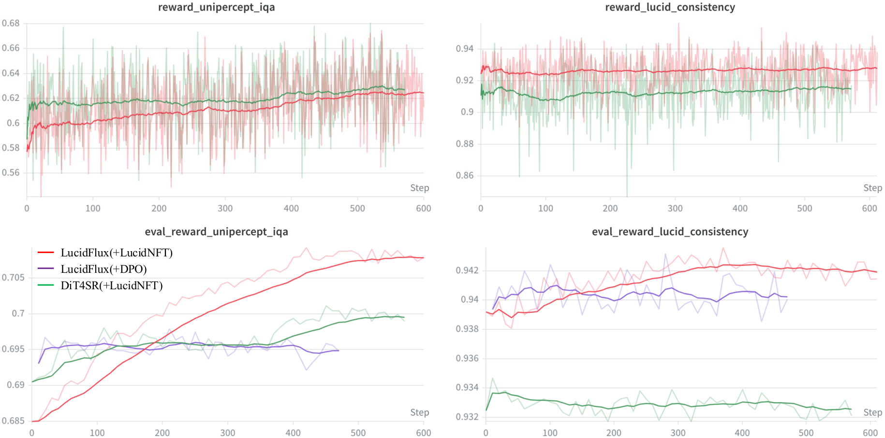
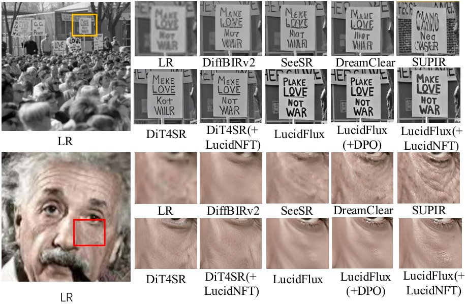

LucidNFT: LR-Anchored Multi-Reward Preference Optimization for Generative Real-World Super-Resolution
†Equal Contribution *Corresponding Author
LucidNFT is a multi-reward Preference Optimization framework for flow-matching Real-ISR that improves perceptual quality while preserving LR-anchored faithfulness under diverse real-world degradations.
Why LucidNFT?
- Faithfulness is hard to assess without HR ground truth. In real-world super-resolution, restored outputs may look realistic yet deviate from the semantic and structural evidence contained in the degraded LR input.
- Naive multi-reward optimization weakens preference optimization in Real-ISR. Preference optimization compares multiple stochastic rollouts conditioned on the same LR input; scalarizing heterogeneous rewards before normalization can compress objective-wise contrasts within each rollout group, causing advantage collapse.
- No-reference perceptual metrics are not enough. Metrics designed for perceptual quality can reward over-sharpening or hallucinated textures, but they do not directly measure LR-anchored faithfulness.
- Existing real-world datasets are limited for preference optimization. Benchmark datasets are typically small or capture-limited, which restricts rollout diversity and reduces the quality of preference signals under real degradations.
Method Overview
- LucidConsistency. A frozen Qwen3-VL embedding backbone plus a lightweight trainable projection head aligns LR and HR semantics in a shared representation space, producing a degradation-robust consistency score.
- Decoupled advantage normalization. Instead of scalarizing all rewards first, LucidNFT normalizes each reward objective per rollout group and only then fuses them, preserving perceptual-faithfulness contrasts; the fused advantage is finally mapped to the bounded reward weight used by DiffusionNFT.
- LucidLR-supported preference optimization. Diverse real-world low-quality images provide more informative rollouts and stronger preference supervision than small benchmark-only datasets.

Overview of LucidConsistency. Left: inference stage where embeddings of the LR input and SR output are extracted and their semantic consistency is computed. Right: training stage where LR-HR pairs are used to optimize the projection head.
| Domain | Dataset Pairing | Baseline | LucidConsistency |
|---|---|---|---|
| Synthetic | LSDIR-Val (paired) | 0.759 | 0.890 (+0.131) |
| Real-World | RealSR | 0.799 | 0.925 (+0.126) |
| DRealSR | 0.786 | 0.921 (+0.135) | |
| Cross-Bench | RealSR LR ↔ DRealSR HR | 0.144 | 0.100 (-0.044) |
| DRealSR LR ↔ RealSR HR | 0.140 | 0.131 (-0.009) |
LucidLR Dataset
LucidLR is a 20K-image real-world low-quality collection curated for preference optimization and unsupervised Real-ISR fine-tuning, collected from Wikimedia Commons with diverse natural degradations (e.g., blur and compression artifacts). Compared with small benchmark-oriented datasets, LucidLR increases degradation coverage and rollout diversity, improving the quality of preference signals for multi-reward optimization.
Representative examples from LucidLR.
| Dataset | Pairing | Primary Usage | Type | # Images |
|---|---|---|---|---|
| RealSR | Paired | Testing / Benchmark | Real-captured | 100 |
| DRealSR | Paired | Testing / Benchmark | Real-captured | 93 |
| RealLQ250 | Unpaired | Testing / Benchmark | Real-world | 250 |
| LucidLR (ours) | Unpaired | Preference Optimization / Unsupervised Training | Real-world | 20K |
Results
- Stable optimization. Training curves in the paper show both LucidConsistency and perceptual IQA rewards improve steadily during preference optimization on LucidFlux.
- Consistent benchmark gains. On RealLQ250, DRealSR, and RealSR, LucidFlux + LucidNFT improves most no-reference IQA metrics over the LucidFlux baseline, including CLIP-IQA+, Q-Align, MUSIQ, UniPercept IQA, and NIQE.
- Better perceptual-faithfulness trade-off. The method improves visual quality without relying on a faithfulness-only objective that could encourage under-restoration.

Advantage separability analysis on the LucidFlux backbone using RealLQ250. LucidNFT consistently yields larger advantage gaps and higher separability than DiffusionNFT, indicating reduced advantage compression under decoupled normalization.

Training dynamics of LucidNFT on LucidFlux. From left to right: training LucidConsistency score, evaluation LucidConsistency score, training UniPercept IQA score, and evaluation UniPercept IQA score. The smoothed curves exhibit a consistent upward trend, indicating stable multi-reward optimization during preference optimization.

Visual comparison on RealLQ250. LucidNFT further improves semantic consistency and perceptual quality over the baseline LucidFlux, producing more faithful structures and richer texture details.
Quantitative Results
| Benchmark | Metric | Methods | |||||||||
|---|---|---|---|---|---|---|---|---|---|---|---|
| ResShift | StableSR | SinSR | DiffBIRv2 | SeeSR | DreamClear | SUPIR | DiT4SR | LucidFlux | LucidFlux(+LucidNFT) | ||
| RealLQ250 | CLIP-IQA+ ↑ | 0.5529 | 0.5804 | 0.6054 | 0.6919 | 0.7034 | 0.6813 | 0.6532 | 0.7098 | 0.7208 | 0.7465 (+0.0257) |
| Q-Align ↑ | 3.6318 | 3.5583 | 3.7451 | 3.9755 | 4.1423 | 4.0647 | 4.1347 | 4.2270 | 4.4052 | 4.4855 (+0.0803) | |
| MUSIQ ↑ | 59.5032 | 57.2517 | 65.4543 | 67.5313 | 70.3757 | 67.0899 | 65.8133 | 71.6682 | 72.3351 | 73.4475 (+1.1124) | |
| MANIQA ↑ | 0.3397 | 0.2937 | 0.4230 | 0.4900 | 0.4895 | 0.4405 | 0.3826 | 0.4607 | 0.5227 | 0.5443 (+0.0216) | |
| NIMA ↑ | 5.0624 | 5.0538 | 5.2397 | 5.3132 | 5.3146 | 5.2209 | 5.0806 | 5.4765 | 5.6050 | 5.5669 (-0.0381) | |
| CLIP-IQA ↑ | 0.6129 | 0.5160 | 0.7166 | 0.7137 | 0.7063 | 0.6957 | 0.5767 | 0.7141 | 0.6855 | 0.7233 (+0.0378) | |
| NIQE ↓ | 6.6326 | 4.6236 | 5.4425 | 5.1193 | 4.4383 | 3.8709 | 3.6591 | 3.5556 | 3.7410 | 3.2532 (-0.4878) | |
| UniPercept IQA ↑ | 58.9290 | 57.6015 | 62.7525 | 65.4760 | 69.2015 | 68.8465 | 68.6430 | 73.0740 | 70.9300 | 73.4790 (+2.5490) | |
| VisualQuality-R1 ↑ | 4.0911 | 3.9474 | 3.9044 | 4.3428 | 4.5118 | 4.4430 | 4.4265 | 4.6146 | 4.5474 | 4.6510 (+0.1036) | |
| LucidConsistency ↑ | 0.9340 | 0.9496 | 0.9232 | 0.9430 | 0.9352 | 0.9467 | 0.9376 | 0.9359 | 0.9334 | 0.9366 (+0.0032) | |
| DRealSR | CLIP-IQA+ ↑ | 0.4655 | 0.3732 | 0.5402 | 0.6476 | 0.6258 | 0.4462 | 0.5494 | 0.6537 | 0.6516 | 0.6867 (+0.0351) |
| Q-Align ↑ | 2.6312 | 2.1243 | 3.1336 | 3.0487 | 3.2746 | 2.4214 | 3.4722 | 3.6008 | 3.7141 | 3.8423 (+0.1282) | |
| MUSIQ ↑ | 40.9795 | 29.6691 | 53.9139 | 60.0759 | 61.3222 | 35.1912 | 54.9280 | 63.8051 | 64.6025 | 68.1545 (+3.5520) | |
| MANIQA ↑ | 0.2688 | 0.2402 | 0.3456 | 0.4900 | 0.4505 | 0.2676 | 0.3483 | 0.4419 | 0.4678 | 0.5004 (+0.0326) | |
| NIMA ↑ | 4.3179 | 3.9049 | 4.6227 | 4.6543 | 4.6402 | 3.9369 | 4.5064 | 4.9913 | 4.9560 | 4.9968 (+0.0408) | |
| CLIP-IQA ↑ | 0.4964 | 0.3383 | 0.6632 | 0.6782 | 0.6760 | 0.4361 | 0.5310 | 0.6732 | 0.6673 | 0.7073 (+0.0400) | |
| NIQE ↓ | 10.3006 | 8.6023 | 6.9800 | 6.4853 | 6.4503 | 7.0164 | 5.9092 | 5.7001 | 5.0742 | 4.1788 (-0.8954) | |
| UniPercept IQA ↑ | 37.3199 | 26.0659 | 49.2755 | 46.2298 | 50.3414 | 34.2473 | 55.1371 | 58.1290 | 59.9032 | 63.7782 (+3.8750) | |
| VisualQuality-R1 ↑ | 3.0231 | 1.8758 | 3.3868 | 3.4796 | 3.6116 | 2.5655 | 3.7349 | 3.9603 | 3.9955 | 4.1455 (+0.1500) | |
| LucidConsistency ↑ | 0.8897 | 0.9413 | 0.8604 | 0.7725 | 0.8926 | 0.9403 | 0.8909 | 0.8886 | 0.7998 | 0.7916 (-0.0082) | |
| RealSR | CLIP-IQA+ ↑ | 0.5005 | 0.4408 | 0.5416 | 0.6543 | 0.6731 | 0.5331 | 0.5640 | 0.6753 | 0.6669 | 0.7151 (+0.0482) |
| Q-Align ↑ | 3.1041 | 2.5086 | 3.3614 | 3.3156 | 3.6073 | 3.0040 | 3.4682 | 3.7106 | 3.8728 | 3.9918 (+0.1190) | |
| MUSIQ ↑ | 49.4988 | 39.9816 | 57.9502 | 61.7751 | 67.5660 | 49.4766 | 55.6807 | 67.9828 | 67.8962 | 70.5625 (+2.6663) | |
| MANIQA ↑ | 0.2976 | 0.2356 | 0.3753 | 0.4745 | 0.5087 | 0.3092 | 0.3426 | 0.4533 | 0.4889 | 0.5284 (+0.0395) | |
| NIMA ↑ | 4.7026 | 4.3639 | 4.8282 | 4.8193 | 4.8957 | 4.4948 | 4.6401 | 5.0590 | 5.1813 | 5.1810 (-0.0003) | |
| CLIP-IQA ↑ | 0.5283 | 0.3521 | 0.6601 | 0.6806 | 0.6993 | 0.5390 | 0.4857 | 0.6631 | 0.6359 | 0.6936 (+0.0577) | |
| NIQE ↓ | 9.0674 | 6.8733 | 6.4682 | 6.0700 | 5.4594 | 5.2873 | 5.2819 | 5.0912 | 4.8134 | 3.9526 (-0.8608) | |
| UniPercept IQA ↑ | 46.5538 | 35.9550 | 52.3237 | 53.6550 | 58.0538 | 46.7850 | 56.6063 | 63.2025 | 60.0925 | 64.7588 (+4.6663) | |
| VisualQuality-R1 ↑ | 3.4492 | 2.7112 | 3.5158 | 3.8928 | 4.0635 | 3.5028 | 3.7821 | 4.1953 | 4.1376 | 4.3389 (+0.2013) | |
| LucidConsistency ↑ | 0.8933 | 0.9398 | 0.8652 | 0.9013 | 0.8873 | 0.9261 | 0.8915 | 0.8902 | 0.9008 | 0.9038 (+0.0030) | |
Gallery
Click an LQ input to open an interactive slider comparison (LQ vs LucidFlux or LucidFlux(+LucidNFT)).
Contact
For questions or collaboration, please contact sfei285@connect.hkust-gz.edu.cn, tye610@connect.hkust-gz.edu.cn, or leizhu@hkust-gz.edu.cn.